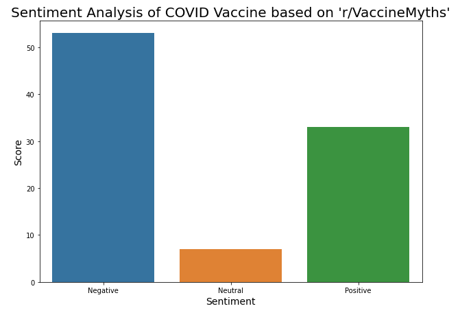
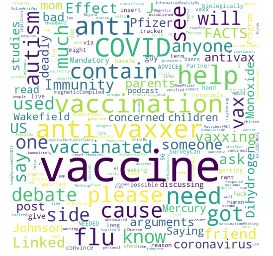

COVID-19 Sentiment Analysis Project
Exploring a subreddit devoted to COVID-19 vaccination myths
In this project, I have performed some exploratory analysis into the sentiment of posts made in the 'r/VaccineMyths' subreddit.
Whole Project
Just Code
Visualising the Sentiment Analysis:

Generating a WordCloud:
